安装扩展
第一次使用只需完成以下五步。安装过程中不需要运行命令，也不需要安装 Node.js、Python 或其他环境。
下载正式版安装包
进入 NIKKE-Workshop GitHub 项目主页，在右侧找到 Releases，点击标有 Latest 的最新版本。
进入版本页面后，在 Assets 中下载 NIKKE-Workshop.zip。
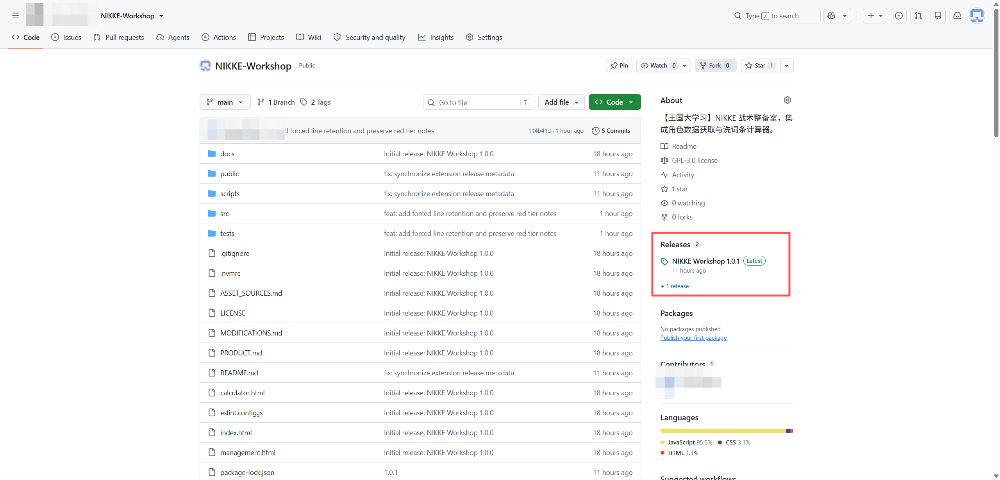
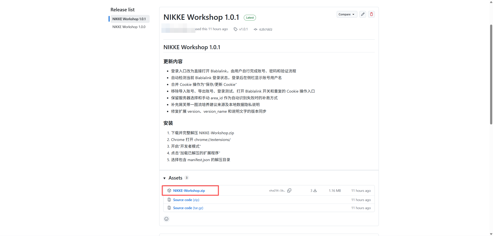
完整解压缩安装包
下载完成后，将 NIKKE-Workshop.zip 完整解压，得到名为 NIKKE-Workshop 的文件夹。
请把这个文件夹放在不容易误删或移动的位置。浏览器后续会持续读取其中的扩展文件。
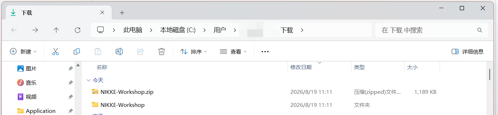
打开浏览器扩展程序页面
根据正在使用的浏览器，在地址栏输入对应地址并按回车。
chrome://extensionsedge://extensions启用开发者模式
打开扩展程序页面右上角的 开发者模式，然后点击左上角的加载按钮。
Chrome 中按钮名称为 “加载未打包的扩展程序”；Edge 中通常显示为 “加载解压缩的扩展”。
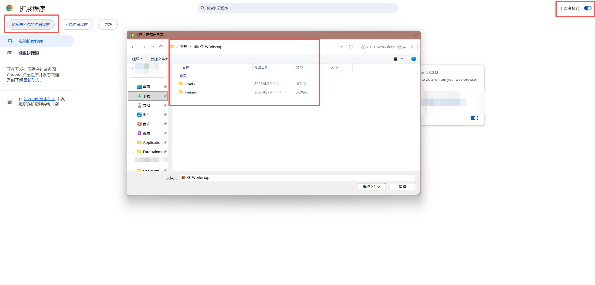
选择扩展根目录
在文件夹选择窗口中，选中刚刚解压得到的 NIKKE-Workshop 文件夹，然后点击 “选择文件夹”。
正确的根目录中应当可以直接看到 assets、images、manifest.json 和 index.html。不要选择 ZIP，也不要进入 assets 子文件夹。
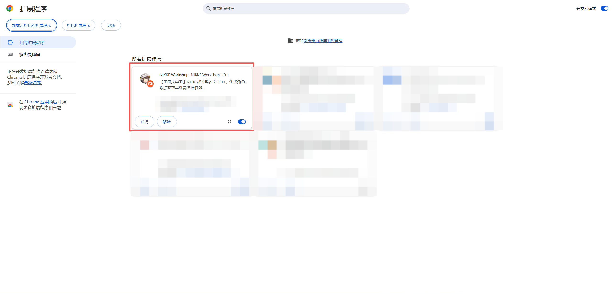
登录与 Cookie
安装完成后，先通过 Blablalink 完成账号登录，再将当前登录状态保存到扩展中。账号和密码只需要在 Blablalink 登录页面填写。
打开 Blablalink 登录页
打开 NIKKE Workshop，在侧栏顶部点击 “登录”。扩展会在新的浏览器标签页中打开 Blablalink。
服务器请选择游戏账号所在区域。area_id 通常保持空白，只有自动识别失败时才需要手动填写。
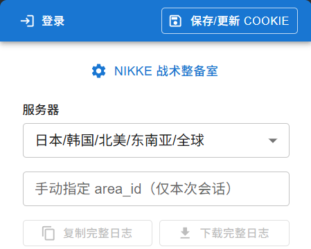
完成账号登录
在 Blablalink 登录窗口中选择正确的服务器区域，填写账号和密码，并根据页面提示完成验证，然后点击 “登入”。
看到 Blablalink 首页已经显示登录状态后，先不要关闭该标签页，返回 NIKKE Workshop 保存 Cookie。
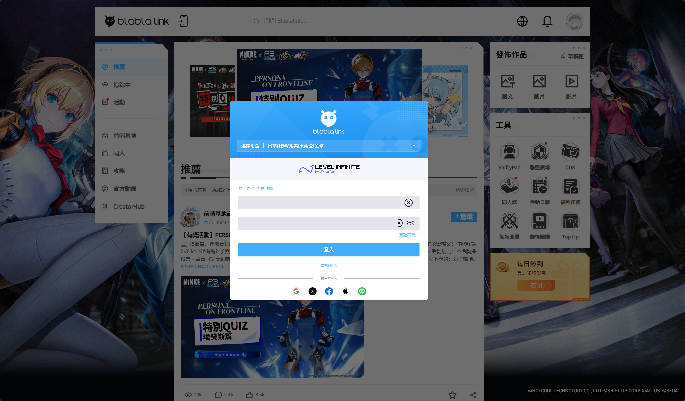
保存或更新 Cookie
返回扩展侧栏，点击 “保存/更新 COOKIE”。首次登录用于保存 Cookie；重新登录或 Cookie 失效后，点击同一个按钮即可更新。
保存成功后，可以关闭 Blablalink 标签页。后续同步账号数据时会直接使用已经保存在本地的 Cookie。
同步账号数据
Cookie 保存成功后，同步账号中已经拥有的妮姬、等级、突破和装备词条数据。同步结果保存在本地，后续可直接继续使用。
开始同步账号数据
进入 “妮姬” 标签页，点击页面底部左侧的 “同步账号数据”。首次同步会根据账号中已经拥有的妮姬逐个读取数据，请保持页面开启并等待流程结束。
确认同步完成
出现 “妮姬数据获取完成” 提示后，同步即告完成。页面会自动进入我们预设好的 “常用” 角色列表，方便直接查看常用角色。
这里显示“常用”不代表只同步了常用角色。账号中全部已经拥有的妮姬数据都已保存，可在主列表下拉框中切换到“已获得”查看。
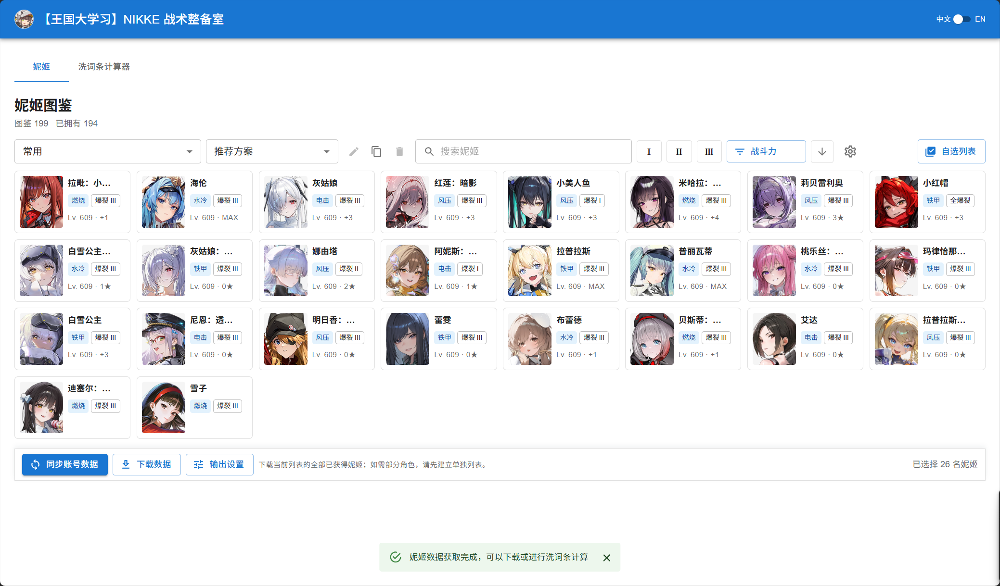
切换全图鉴、已获得和常用
点击页面左上方的主列表下拉框，可以在三个基础视图以及之后建立的自选列表之间切换。
- 全图鉴：显示扩展当前收录的全部妮姬，包括账号尚未拥有的角色，适合查询角色和使用筛选功能。
- 已获得：显示刚刚从账号同步到本地的全部已拥有妮姬，并显示对应等级和突破信息。
- 常用：由扩展预设的一组常用角色，便于快速下载数据或进入洗词条计算。
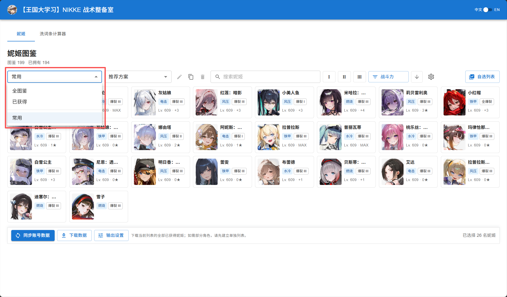
使用图鉴与角色列表
通过搜索和筛选浏览图鉴，调用内置推荐方案，或把需要关注的妮姬整理成自己的列表。
搜索、排序和筛选妮姬
使用搜索框查找角色；使用 Ⅰ、Ⅱ、Ⅲ 快速筛选爆裂阶段。点击排序按钮可调整正倒序，点击齿轮旁的筛选按钮可设置职业、属性、武器和企业等条件。
齿轮中的 “400级属性” 仅控制下载数据中的模拟生命、攻击和防御是否统一按 400 级计算，不会修改账号实际同步到的等级。
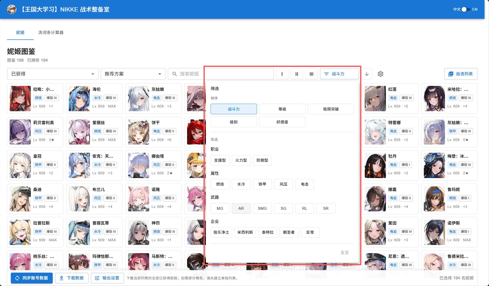
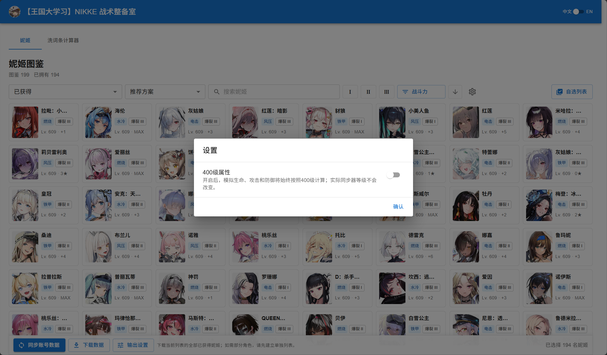
使用内置推荐方案
点击主列表右侧的 “推荐方案” 下拉框，可以直接查看内置的推图阵容、异常拦截、辅助角色、个突主C、企业塔及其他专题方案。
推荐方案按照攻略中录入的顺序展示角色，适合快速判断账号在某个场景中已经拥有和需要培养的妮姬。
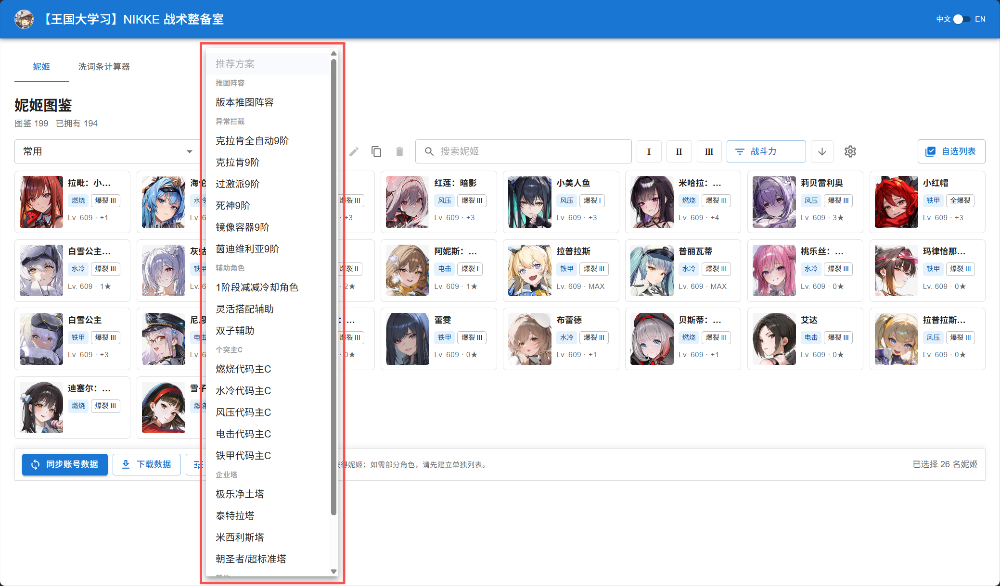
创建和使用自选列表
切换到 “已获得” 后，点击右侧的 “自选列表” 进入多选状态。勾选需要的妮姬后，可在底部把角色加入已有列表，或点击 “新建列表” 并填写名称。
自选列表只能加入账号已经获得的妮姬。保存后，新列表会出现在主列表下拉框中；列表旁的编辑、复制和删除按钮可用于后续管理。
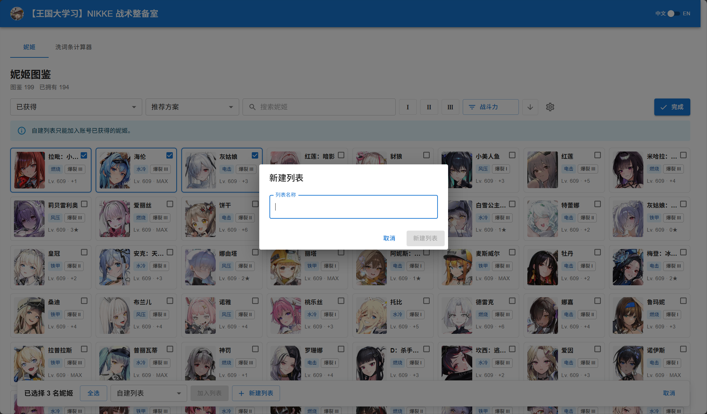
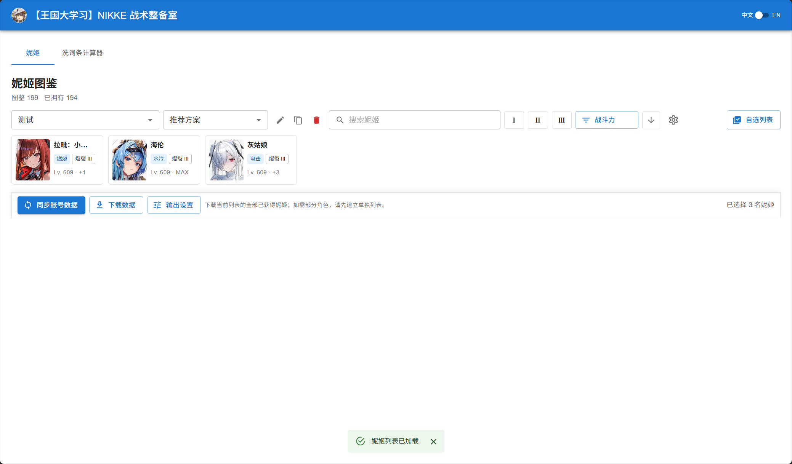
下载当前列表的数据
点击底部的 “输出设置”，选择 Excel 中需要包含的同步器、技能、装备词条和模拟属性字段，然后点击 “下载数据”。
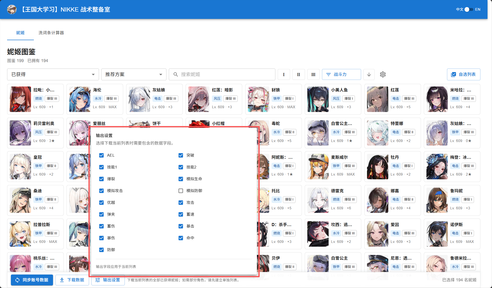
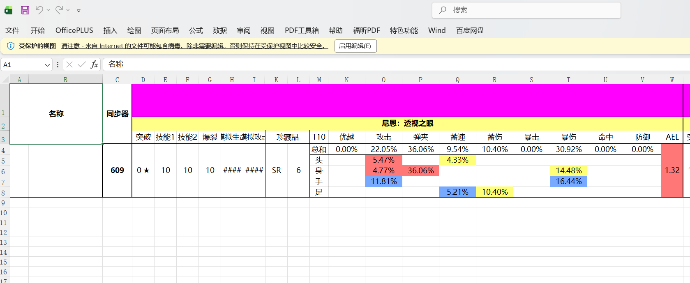
洗词条计算器
根据当前装备盘面和目标词条，使用有限状态 MDP 计算期望石头消耗，并把最优策略整理成可以连续执行的操作阶段。
计算器通用功能
选择计算对象
打开主页面顶部的 “洗词条计算器” 标签。第一个下拉框可以选择 单装备模拟、四装备全局模拟、已获得 或自选列表；推荐方案单独位于第二个下拉框。选择列表或方案后，再从第三个下拉框选择具体妮姬。
选择具体妮姬后，如果攻略数据中存在培养建议，页面右侧会显示摘要；点击后可查看备注、装备、词条、技能、魔方和珍藏品建议。
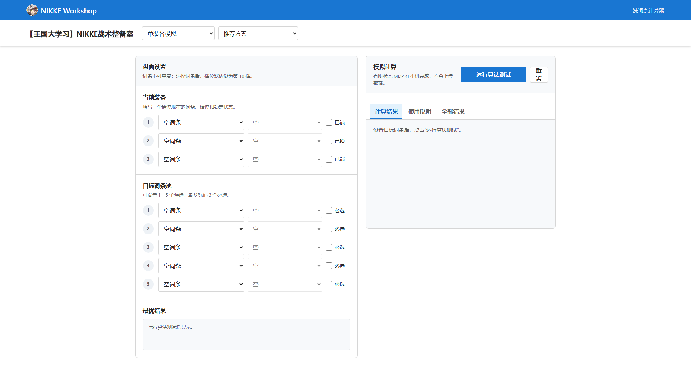
填写当前装备盘面
“当前装备” 的三行分别对应装备现有的 1、2、3 号词条。每行先选择词条名称，再选择实际档位；没有词条的位置保持 “空词条”。
- 词条和档位：必须按游戏内当前装备如实填写；同一件装备不能出现重复词条。
- 已锁：表示这个词条在游戏中目前已经锁定。Blablalink 不能提供词条是否已锁的数据，因此同步账号后必须对照游戏界面，手动勾选每个已锁词条。勾选后，算法会从当前锁定状态继续计算洗练成本。
- 强制保留：点击词条左侧的圆形编号，编号变蓝后，该词条在后续策略中必须保留。再次点击可取消。
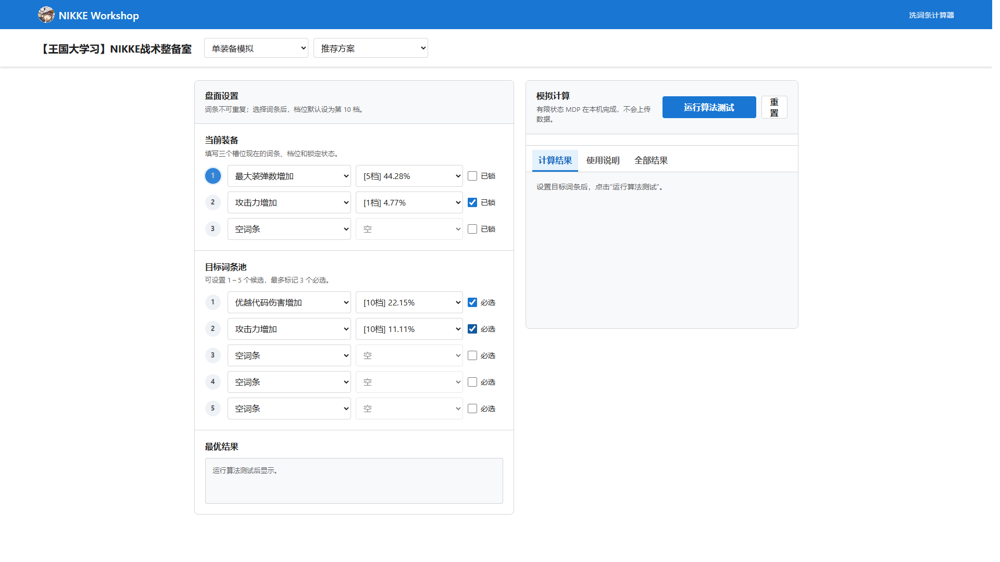
设置目标词条池
“目标词条池” 可以填写 1～5 个候选词条。选定词条后档位默认设为第 10 档，可再改成自己能够接受的最低档位。
- 候选数量：候选不超过 3 个时，最终目标包含全部候选；候选超过 3 个时，算法从中选择满足条件且期望成本最低的 3 个。
- 必选：勾选后，该词条必须进入最终目标；最多可以标记 3 个必选。
- 档位：目标档位是最低门槛，高于该档位同样视为达标。
目标池内不能出现重复词条。强制保留的非目标词条会占用一个槽位，因此要确认剩余槽位仍能容纳全部必选目标。
运行计算
确认当前盘面、锁定状态和目标条件后，点击右上角的 “运行算法测试”。单装备会计算一件装备；单角色则会同时处理所有未勾选“不跑”的装备。
“最优结果” 会按操作不变的连续阶段展示：每个阶段先写应持续执行的操作和停止条件，再同时显示该阶段自身的期望耗石，以及从该阶段开始完成全部目标的总期望耗石。点击 “查看完整决策树” 可逐级展开随机结果对应的后续动作。
结果页签、重置与错误提示
- 计算结果：显示有限状态 MDP 的当前最佳动作和总期望；装备盘面下方的“最优结果”显示阶段式建议和可逐级展开的完整决策树。
- 使用说明：显示模型自检、有限状态 MDP 期望、状态数量、求解轮数和 Bellman 残差，用于核对求解是否正常。
- 全部结果：用于汇总按具体妮姬运行并保存的最后一次结果；单装备模拟没有绑定妮姬，不会新增一条角色记录。
- 重置：清空当前装备、目标池、锁定状态和本次结果，恢复到初始单装备盘面。
单装备模拟
进入手动单装备模式
在第一个下拉框选择 “单装备模拟”。这种模式不依赖账号同步数据，适合临时计算任意一件装备，或在无法自动同步账号时手动录入盘面。
按照游戏内数据填写三条当前词条、档位和已锁状态；需要无条件保留的现有词条，点击左侧圆形编号设为强制保留。随后设置 1～5 个目标候选，并标出最多 3 个必选。
读取单装备结果
运行后，每个阶段都包含两组数字：“约 X 颗石头” 表示只完成当前阶段的期望耗石；括号中的 “总计约 Y 颗石头” 表示从该阶段起点继续执行最优策略，直到全部目标完成的期望耗石。
如果洗出目标词条时数值可能不达标，结果会额外列出“若数值未达标”的条件阶段；这个阶段不会在前一步已经完成全部目标时执行。
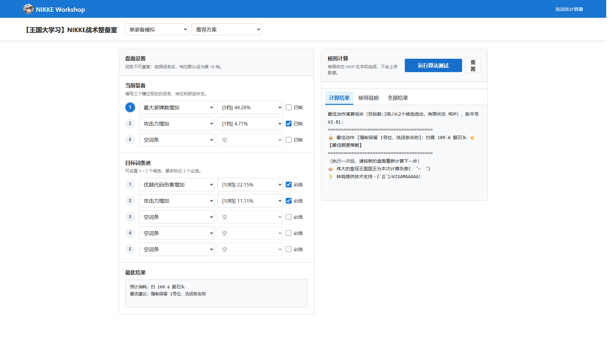
处理无法运行的提示
常见原因包括：当前装备或目标池存在重复词条、没有设置目标、必选超过 3 个、强制保留占满可用槽位，或目标候选过多导致状态超过 24,000。根据页面提示减少候选、降低强制保留数量或修正重复项后再试。
单角色：独立与全局
选择四装备来源并检查盘面
从 已获得、自选列表或推荐方案中选择具体妮姬后，计算器会自动导入头部、身体、手部和足部装备的当前词条。请先核对同步结果；不想参与本次计算的装备可勾选右上角 “不跑”，其成本不会计入总计。
没有同步账号数据时，也可在第一个下拉框选择 “四装备全局模拟”，手动填写四件装备的词条、档位和已锁状态，再使用相同的全局条件求解。该临时盘面不绑定妮姬，也不会写入角色汇总。
单角色模式默认进入 “全局”。右上角的模式下拉框可以在 全局 与 独立 之间切换；四件装备中至少要保留一件参与计算。
独立：分别设置每件装备的目标池
独立模式下，每件未跳过的装备都有自己的目标词条池。可以逐件手动填写，也可以使用 4优越4攻击、4优越 或 4攻击 预设，再逐件修改最低档位、必选和强制保留。
运行后，每件装备分别求解有限状态 MDP，并在各自下方输出最优结果；角色总期望石头等于所有未跳过装备期望值之和。
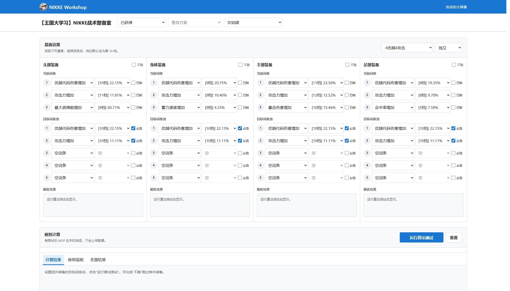
全局：按条数和合计数值分配目标
全局模式不要求预先指定词条落在哪件装备。每条条件由 目标词条、至少条数 和 合计数值至少 组成；同一词条不能重复添加，最多可设置 6 条条件。
内置 4优越4攻击预设包括：顶级（110 优越 / 50 攻击）、毕业（100 / 45）、优秀（90 / 40）和出村（80 / 30）。运行后，算法会把 算法分配目标 和 最优结果 写回对应装备下方。
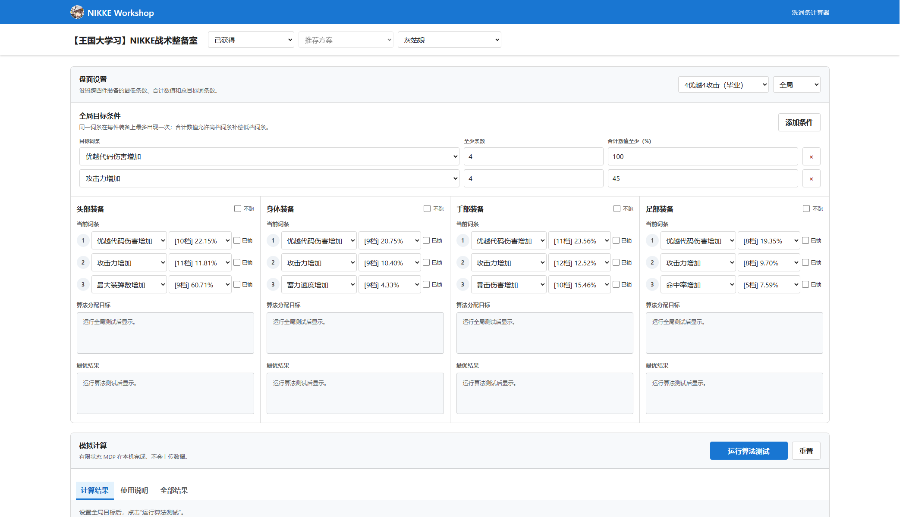
怎样选择模式
你已经确定每件装备的目标，或想固定四件装备各自承担的词条。算法逐件求解，最后直接相加。
你只关心四件装备合计需要几条、总数值达到多少，希望算法自动寻找成本更低的装备分配。
结果保存与下载
保存和整理妮姬结果
具体妮姬每次成功运行后，程序会在本地保存该妮姬最后一次使用的模式、目标条件、四件装备结果和期望石头。再次运行同一妮姬会覆盖旧记录，因此“全部结果”始终代表每名妮姬的最新方案。
切换到 “全部结果” 后，可以按时间顺序、时间倒序、数量顺序或数量倒序排列；默认是时间顺序。展开 “查看最优结果” 可以检查四件装备建议。
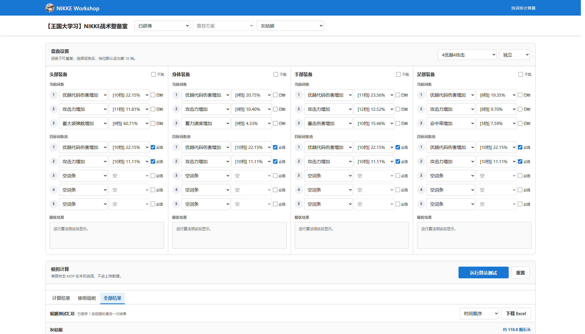
下载汇总 Excel
至少存在一名妮姬的已保存结果后，“下载 Excel” 才会启用。导出的单个 “洗词条结果” Sheet 包含：
- 最上方：全部妮姬预计石头总计。
- 每名妮姬：独立板块、模式、保存时间和妮姬小计。
- 每件装备：当前词条、右侧算法分配目标、预计石头和下方最优建议。
- 颜色：需要洗为红色、已经满足为绿色、本次不跑为灰色。
有限状态 MDP 算法解释
状态、动作与转移概率
有限状态 MDP 可以理解为“把所有可能盘面和下一步操作都列出来，再从终点反推当前最省石头的动作”。
- 状态：三条词条的名称、档位、已锁状态，以及强制保留要求。
- 动作：洗名称、洗数值，以及采用哪一种锁定组合。
- 转移：每种动作可能出现的下一盘面及其游戏概率。
- 目标：满足候选 / 必选最低档位，或满足全局条数与合计数值。
算法使用 Bellman 迭代比较各状态下所有动作的“本次成本 + 后续期望成本”，直到残差足够小，得到每个状态下的最低期望与最优动作。界面再把连续采用相同操作的状态压缩成阶段，并保留阶段内全部随机分支的概率与成本。
“精确”与“期望”分别代表什么
精确求解 指使用完整离散概率而不是随机抽样，所以不需要模拟次数和随机种子；期望石头 是大量重复情况下的平均成本，不保证某一次实际洗练恰好等于这个数字。
阶段式建议只在当前操作仍符合该阶段说明时连续执行；达到停止条件后切换下一阶段。如果实际盘面与阶段条件不一致，或手动改变了锁定状态、目标或词条，请更新当前盘面并重新求解。
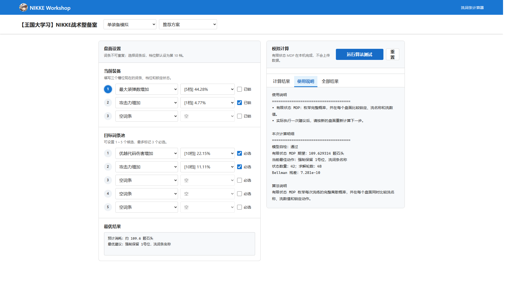
不同模式怎样使用算法
- 单装备：对一件装备直接建立有限状态 MDP。
- 单角色独立：对每件未跳过装备分别精确求解，总期望为各装备期望之和。
- 四装备全局：无论盘面来自具体妮姬还是手动录入，都会先保留多指标候选，再通过跨装备移动、交换、条数和档位邻域搜索改进方案。
- 精确复核：对搜索候选中的每件装备运行有限状态 MDP，并选择在当前搜索预算内合计期望最低的静态分配。